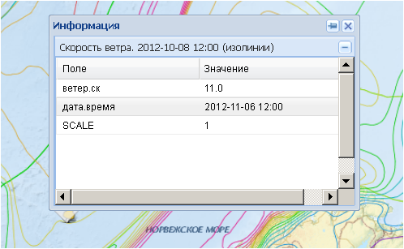
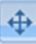
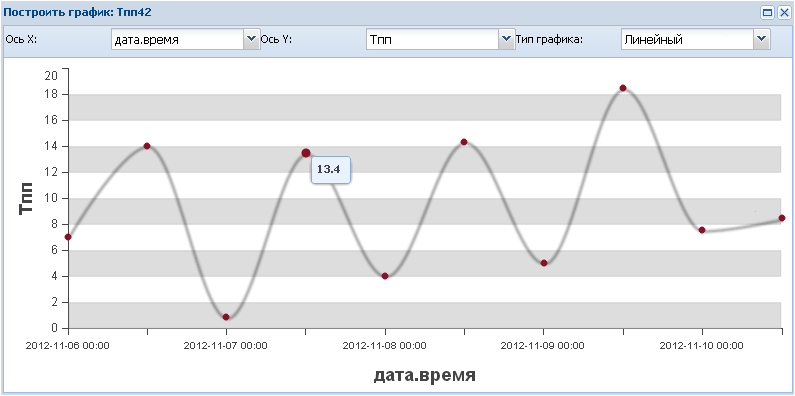

Кнопки управления
Активирование операций осуществляется нажатием на пиктограмму. Все пиктограммы имеют всплывающие подсказки.
- Кнопка Информация. После нажатия курсором мыши на необходимый объект на экране появляется метка и выводится дополнительное окно Информация, в котором отображаются атрибутивные характеристики указанного объекта. Положение окна на экране по умолчанию фиксированное. После нажатия на пиктограмму это ограничение снимается, и окно можно свободно перемещать по экрану.

Чтобы убрать дополнительное окно Информация, достаточно нажать пиктограмму , при этом значок метки останется. Нажав на метку, можно вновь вернуть дополнительное окно.Чтобы убрать метку, надо нажать пиктограмму .
На рабочем окне карты можно выводить неограниченное количество окон Информация, но значок метки будет при этом перемещаться вместе с последним из выведенных окон. Все предыдущие открытые окна Информации будут иметь указатель, к какому объекту относится данное окно.
Для слоя GeoRSS опция Информация действует по-другому. При активации кнопки курсор меняет свой вид на . При его наведении на условный знак GeoRSS появляется всплывающее окно сообщения.

 - Кнопка Панорамировать карту - перемещение карты в рабочем окне. При активном инструменте можно перемещать видимую область карты, двигая курсор в рабочем окне с зажатой левой кнопкой мыши. При этом курсор мыши поменяет вид с на . (Видимая область – видимый участок карты в рабочем окне карты).
- Кнопка Приблизить - приближение к выбранному участку карты (Увеличение масштаба карты). Полученный масштаб указан на панели отображения и регулирования масштаба. Приблизить необходимый участок карты можно также, указав прямоугольную область для приближения, перемещая курсор в рабочем окне карты с зажатой левой кнопкой мыши и одновременно нажатой клавишей Shift. В рабочем окне отобразится выделенный прямоугольник с одновременным увеличением масштаба.
- Кнопка Отдалить - отдаление от выбранного участка карты (Уменьшение масштаба карты). Полученный масштаб указан на панели отображения и регулирования масштаба.
- Кнопка Предыдущая видимая область - переход к предыдущей видимой области карты. (Видимая область – видимый участок карты в рабочем окне карты). На наличие предыдущих видимых областей указывает изменение курсора мыши со «стрелки» на «ладошку» при наведении его на пиктограмму. Когда пиктограмма окрашена менее ярко  , и «ладошка» не появляется, предыдущих видимых областей нет.
, и «ладошка» не появляется, предыдущих видимых областей нет.
- Кнопка Следующая видимая область - переход к следующей видимой области карты. (Видимая область – видимый участок карты в рабочем окне карты). На наличие следующих видимых областей указывает изменение курсора мыши со «стрелки» на «ладошку» при наведении его на пиктограмму. Когда пиктограмма окрашена менее ярко , и «ладошка» не появляется, следующих видимых областей нет.
- Кнопка Показать всю карту - переход к полной видимой области карты. При нажатии на кнопку можно просмотреть всю карту полностью при наименьшем для этой карты масштабе.
- Кнопка Показать легенду - отображение легенд загруженных слоев. При нажатии на пиктограмму появляется дополнительное окно Показать легенду, в котором приведены легенды всех отображаемых слоев. Окно имеет меняющиеся границы и может перемещаться по рабочей области путем перетаскивания за верхнюю панель нажатой левой кнопкой мыши.

- Кнопка Измерения - переход к группе инструментов, позволяющей измерять длины и площади объектов на карте. Нажатие на пиктограмму раскрывает ниспадающий список с вариантами измерений – расстояний либо площадей.
Для измерения расстояния необходимо нажать курсором на начальной точке и дважды нажать в конечной точке. Появится информационное окошко с указанием измеренного расстояния в километрах и милях.
Для измерения площади интересующая пользователя территория очерчивается многоугольником, завершающая точка многоугольника ставится двойным нажатием левой кнопки мыши. Появится информационное окошко с указанием измеренной площади в квадратных километрах и квадратных милях.
 - Кнопка Печать карты
- Кнопка Печать карты
 - Кнопка Графики - построение графиков для демонстрации изменений показателей в указанной пользователем точке. Данная опция предусмотрена для серии слоев одного и того же показателя, имеющего разные временные срезы.
- Кнопка Графики - построение графиков для демонстрации изменений показателей в указанной пользователем точке. Данная опция предусмотрена для серии слоев одного и того же показателя, имеющего разные временные срезы.
Чтобы получить график, необходимо активировать кнопку, нажав на нее, и указать курсором точку, для которой необходимо создать график. В точке появится значок метки , а в рабочем окне - дополнительное окно Построить график, в котором осуществляется настройка графиков.

В окошке Ось Х: из ниспадающего списка выбирается значение для оси категорий - название слоя, дата.начала (значение элемента дата.начала) или дата.время (значение элемента дата.время).
В окошке Ось Y: из ниспадающего списка выбирается показатель для оси значений.
В окошке Тип графика: выбирается линейный, площадной или столбчатый тип графика.
Установив все настройки, пользователь получает график соответствующего вида. Подведя курсор к каждой точке графика, можно увидеть точное числовое значение данной точки.
Кроме настроечных окошек существуют дополнительные опции, дающие возможность добавлять слои, удалять слои и сохранять график. Для добавления слоя необходимо нажать кнопку Добавить и в появившемся окошке ввести его название.
Для удаления слоя его надо засветить курсором мыши и нажать кнопку Удалить.
- Кнопка Панель редактирования - служит для активации режима редактирования, который распространяется только на редактируемые слои. При нажатии появляется дополнительная панель Редактирование с двумя возможными опциями – создание новых объектов и редактирование имеющихся объектов слоя.
 - Кнопка Создать новый объект слоя. Используется для добавления нового объекта в редактируемом слое.
- Кнопка Создать новый объект слоя. Используется для добавления нового объекта в редактируемом слое.
Нажать (активировать) пиктограмму и левой кнопкой мыши нанести точечный, линейный или полигональный объект. Создание линейного или полигонального объекта завершается двойным нажатием кнопки мыши. После нанесения объекта раскроется дополнительное окно, в котором можно оставить комментарий, сохранить объект или отменить его создание.
После выбора опции Сохранить приложение автоматически перейдет в режим редактирования. В этом режиме пользователь может начать редактирование, удалить объект или выйти из режима редактирования, нажав пиктограмму .
 - Кнопка Редактировать объект слоя. Используется для изменения существующего объекта в редактируемом слое.
- Кнопка Редактировать объект слоя. Используется для изменения существующего объекта в редактируемом слое.
Необходимо активировать пиктограмму и левой кнопкой мыши нажать на редактируемый точечный, линейный или полигональный объект. Появившееся окошко позволяет либо удалить объект, либо приступить к его редактированию. Положение окошка фиксировано, если его нужно подвинуть, следует открепить его, нажав на пиктограмму и перетащить за верхнюю панель в другое место.
Выбрав опцию Редактировать, можно изменять геометрию объекта или его атрибутивные характеристики. Завершить операцию выбором опции Сохранить или Отменить.
- Кнопка Помощь - служит для вывода на экран справочной информации, необходимой пользователю для работы с приложением. При нажатии на кнопку Web-браузер откроет справочную систему в отдельном окне, которое можно использовать в оконном или полноэкранном режиме. В оконном режиме окно справки остается видимым, позволяя пользователю работать с основным окном приложения.